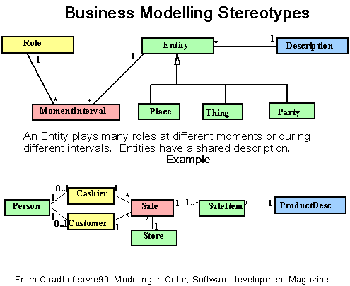

Are data flow diagrams (activity diagrams in UML) a high level representation of the SUD?
well.... first activity diagrams and data flow diagrams are quite different in what they show and what they mean
[ http://cse.csusb.edu/dick/papers/rjb04bDFDs/ ]
I would recommend using DFDs for analyzing existing systems (CSCI372) rather than designing software.
They are good for working out, at a high level, what goes on in an enterprise prior to working out what needs fixing.
Using an activity diagram to design software is returning to the early 1960s. OK for small programs and
detailed work on algorithms.
Neither are any help in soting out the classes and packages needed in modern OO Software.
If you really want to know try
[ Petri Nets in math_76_Concurency ]
in my notes on Mathematics. Note: not for the faint hearted or CS375.
my understanding of a state machine in a web project would be like what
page the user is currently navigated to?
Good point. One use of a state machine is to show the navigation through a
web site. Each state is associated with a web page and each user
click/form fill/.... is an
event. Oddly, the people who invented UML don't mention this application.
However I think it very helpful to document complex user interactions with
a state
machine. It is is easy to do, clarifies the design, and doesn't really
break
the semantics of the diagram.
Can you explain with more details State-Independent and State-Dependent
Objects in State Machine Diagrams?
No time, sadly.... implementation is mention in several CSci classes and
they are a strong part of all CSci theory.
In practice: keep it simple and do it in groups!
For whatever reason when I read these chapters it almost feels like I am constantly going in circles to modify and re-apply I take it this is common in Modeling? And is this really what takes place when one is creating something to a stakeholders interest?
Yes.... each circle is called an iteration... Note: you can try to get
it right with out iterating but these projects either have to be
small or lucky.
Can one develop domain models using design patterns such as Gof or GRASP?
and If so, why can't we use them earlier?
GRASP and GoF are about designing solutions. Domain models are about
problems not solutions. So GRASP and GoF are not the right tools.
Analogy: GRASP and GoF are tools for sculpting software. Domain model
is like trying to find a good view for a landscape painting.
However the GoF inspired people to look for pattern languages for the
domain
model. And they have been published and posted to the web.
Some of these are in Larman's book. For example: we often find that
a set of objects share one of a number of descriptions. So the model
has each item having a particular description.
Message
What are the differences between a Concept and an Element?
I never used the word element this course! What have I missed?
In an earlier chapter when domain modeling was first introduced the author
gave the example of how he used such a model to help him understand a
business (p.137). Should this still be a primary motive for creating a
domain model? Is so, can we make our domain model as simple as needed in
order to understand and grasp the concepts we are modeling?
Yes the first reason for drawing a domain model is to improve
your grasp of the business. But the next reason is to act as
a visual glossary of business terms. Then it becomes the inspiration
for classes in your design. And it ends up as a tool for others
to answer the question: "what were they thinking of".
So you probably have to go on beyond understanding and grasping
the concepts. There is also a trap: there is know way to
know that you understand the concepts. You may be tempted to
stop to early (keeping it simple, rushing to design), or
to go on too long (paralysis by analysis). Your domain model
is tested by peer and stakeholder review plus design and coding.
Expect your understanding of the client's domain to be
badly shaken by the first tests carried out by users and stakeholders.
I'd like to give solid rules but I don't know any.
We have design some object that is software level, not conceptual any more,
why do we still need to refine Domain Model?
Good question -- you've got a working tested set of classes in your
software, is it worth rethinking the domain model and then seeing how that
maps into changes in the design?
Several methodologists like to avoid all documentation -- the believe
in the code and nothing but the code. People like this will say you
should never go back.
Others, at the other extreme will tell you that this is the organizational
process, that the documentation is an essential part, that all kinds
of bad things will happen to you, you team, the company, and/or the
world if you don't redraw the domain model.
Their is, in each iteration of a particular project, in a particular
enterprise, a
sweet spot
between the two extremes: one that lets you move on quickly
with out messing things up.
I don't know how to calculate this point.
For myself I enjoy domain modeling -- especially untidy and personal
domain models so I do more than most people.
Throughout chapter 31, Domain Model Refinement does not mention any implementation of GRASP principles or GoF patterns. Wouldn't domain model be useless without the guidance of GRASP and GoF for the implementation of abstract super classes and subclasses?
GRASP is about design. Domain is about reality. Two different ways of thought. Different diagrams. Different!
Can there be super classes put into other super classes or is this over
complicating it...
think of your example earlier black lab -> Dog -> Mammal -> living thing
It is absolutely typical that you have a chain of superclasses.
In Java for example everything ends up at Object.
From the guidelines given in the book, which is the most influential in the
decision of when to define a conceptual subclass?
All of them... any one can make it worthwhile to create a subclass.
They are really all parts of a single idea: objects in a subclass
must be special kinds of objects in the superclass.
Can you please clarify that section. The book is a little vague on when not
to use super/subclasses.
Don't waste your time making distinctions that make no difference to
the current iteration of the software.
- A difference that makes no difference, is not a difference.
(Mr Spock and Wittgenstein).
Can you explain a little bit better Conceptual Superclasses and Subclasses, and give a small example?
Can you show a example of a subclass? Drawing a diagram would be amazingly helpful.
Example: A Student is a special kind of Person.
- Student ⊆ Person
Demo on board.
Exercise: Draw this in the UML....
- Faculty are People too.
- Faculty ⊆ Person
Exercise: Think up any other example, in the real world of a
subclass and a superclass pair.
Would the inclusion of subclasses in a domain model signify an effort to reduce coupling?
No. In a domain there is no coupling!
Coupling is one of the guidelines we use in designing classes. And subclasses
are highly coupled to their superclasses. So they may have the reverse effect.
- When is a correct scenario to define a Conceptual Subclass?
- When to define a conceptual superclass?
- When do partition a class into subclasses?
When you notice one in the domain.
Example: stakeholders talk about debits, credits and transfers as three
kinds of transaction.
Example: You've been working on understanding Widgets at Universal Widgets.
You discover that they also sell "Wodgets"...... and then they say, but
"A wodget is just a special kind of widget".
Example: The users don't like the fact that your program treats undergraduate
students the same as graduate students. (Note -- but in this case you've
probably got a hierarchy of student states, not of students. An
undergraduate matures into a graduate....)
More below.
Do all refined domain models need to have superclasses and subclasses?
Nope. Some are too simple. Proof: a domain with one class can have no
generalizations.
The transition into the hierarchy model confuses me. Can you give tips or
hints to help map the classes to the proper levels?
It is not a question of looking for prescribed levels. It is more a matter
listening and talking to stakeholders and drawing out how they think.
In fact, you may already have got a generalization in one of your models
already without noticing it: they show up with two symptoms. The
association is optional to one ( 0..1------1 ) and there is an adjective
in the name of the class at the optional end. Then you can use Larman's
tests.
It is one of those skills that get better when you do it.
It is not uncommon for a payment to involve multiple payment methods. For
example, a customer might pay cash for part and the balance by credit card.
How would you resolve this in UML?
Fairly simply. The domain model would show several payments are
possible for one sale. In the Design, I strongly expect to use the GoF
Composite pattern -- allowing for a composite payment to be made up
of a series of simple ones.
In the definition it says that every member of a class C must also be a
member of a subclass, then class C is called an abstract conceptual class.
So then a abstract conceptual class is a class that must have a subclass?
Yes... and more.... all its subclasses must exhaust the possibilities. No
member of C is not in one of it's subclasses.
Can you give us a good example of what they mean by an abstract conceptual
class?
In Euclid's geometry you have Scalene, isosceles, and equilateral triangles.
They are all triangles. Every triangle has to be either scalene, isosceles,
or equilateral.
Or conics: every conic section is an ellipse, hyperbola, or a parabola.
And
each ellipse, hyperbola, or parabola is a conic section.
Contra-wise: a circle is an ellipse but some ellipses are not circular and so
we would not call Ellipse an abstract class. Some Ellipses are
not circular.
Exercise: Think of an abstract superclass which has two subclasses.
When displaying abstract classes is it considered ideal to use Italics?
I dislike this.... especially with hand drawn diagrams. I taught myself to use
italic handwriting (Chancery!) when I was 15 in the hope of making it readable.....
And so it does not work for me. And I forget how often I have had to stare
at the name of a class to see if it is abstract or not.... BUT -- it
takes time and space to put
{abstract}
in the box.
Sorry -- no real solution here!
Can you explain what is really going on in figure 31.11? I don't understand how that changes the meaning of diagram(a) to diagram(b).
Figure 31.11 (a) shows three subsets of payment with space all round them. It
indicates that Payment objects can exist that are neither CashPayments,
CreditPayments, or CheckPayments.
Figure 31.11 (b) cuts up Payment into three exclusive types.
It shows that any Payment must be one of the three subclasses: Cash, Credit, Check.
This is the most important effect of labeling a class {abstract} in a domain
model.
Mathematically (b) shows a cover and (a) some subsets.
By the way..., in theory the subsets may overlap unless you label the triangular
arrowhead {disjoint} but in practice people assume that the subsets are disjoint.
Is the state diagram referred to on page 515, the same as the state machine diagram referred to on page 489?
Yes.
I am a bit thrown off by the diagram on 31.17 regarding the Incarceration
diagram. I understand the association idea but why is the idea of Married to
even involved in the diagram? Also why is the married portion under
JailTerm and why is it related to itself?
Oddly I did not notice this until a few minutes ago. And suffered a bit
of a jolt. I suspect a rather
sad joke. Marriage is certainly between two people... but I suspect
calling
it a JailTerm is in bad taste. And technically I'm not to happy with one
association class managing two very different relationships.
Also I don't really understand Aggregation, it seems as though theirs
really no point to them. Can you explain their purpose?
Once upon a time we used it to show a pointer in a design diagram.
No longer.... just an arrow will do.
You, me, and the Three Amigos all agree that the open diamond is a waste of time
and money.
But you are going to meet people who think it means something. Just don't
waste time and energy discussing it!
Since the author mentioned that plenty of time has been wasted by identifying and illustrating compositions, should we just refrain from using them altogether?
Yes, please!
The only purpose is as an alternative to writing "Has" on the association.
Can composition be navigable in both directions?
Yes. Composition means "part of" and if you get hold of a part of something you have also got hold
of the whole. Like grabbing someones arm and pulling them towards you.
In a design composition means storing the object inside another one.
Will composition be considered a synonym of aggregation?
No. Quite different..... in a domain, aggregation is meaningless but composition implies
whole-part. In a design, people use aggregation to indicate a pointer. It is old-fashioned
but looks good.
what are some of the ways to identify a composition?
Firstly don't waste time and worry on whether an association between two
classes
is a composition, and aggregation, or just a plain association. It is
better to spend time getting the multiplicities and constraints right!
Second, compositions are rare -- try the demolition test next.
Could you show an example of Composition?
Jack Brown Hall is composed of rooms... try extracting one undamaged.
Demolish JBH and you also demolish the rooms.
It is not always that clear cut... My car is composed of many parts
but some of them can be recycled.... but I'll probably use composition.
How about a restaurant and its clientele?
I'm confused, composite aggregation can create and destroy objects?
Yes and no. The full diamond indicates a class that is responsible
for objects at the other end... So much so that it has life-and-death
control over them. They will die if their associated "parent" dies.
This meaning makes a lot more sense when you know that the diamond
used to be used to mean an object that
stored the data that were the other
objects. The open diagram indicated a pointer or reference to the data
that was stored elsewhere. Composition was physical containment so
when you deleted the parent, the Children sere deleted with it. The
UML tried to avoid this physical memory model and the result is a little
abstract.
I had trouble following the section on time intervals, can you clarify this section?
In my training in conceptual modeling I was taught to just ignore times and dates,
because every object in your model is changing and so just about every one has
a time+date associated with it! WE told, very strongly not to have a box labelled
"TIME" because it would be linked to everything. Instead treat it as a data
type (like Number and Money) and time dependent objects would have attributes
birth: Time
death: Time
graduation: Time
marriage: Time
divorce:Time
Now this collides with another heuristic used in conceptual modelling --
- (DRY): No repeating groups
So one common pattern is to split off the time dependent data from its
parent and discovering a concept as an entity:
- Person (2)---(*) Marriage (*)----(1)TimeInterval
(in a standard monogamous model).
So you can expect this. Indeed this is a common domain pattern

Are derived attributes the same as attributes in other classes? (e.i. generalization, Teacher->Person).
No. This is not C++.
If we derive classes (C++ terminology) we inherit the attributes and
they were they would not be shown. Thus, if a Person has a name
and Teachers are people then they automatically have a name. If you show 'name'
in both classes then you have said that Teachers have a special name in addition
to their name as a person. For example
Author is a special kind of Person
Author has a nom-de-plume
I know when you have a derived element you are not suppose to put it in a diagram, so where do you put the information on a derived element,in the specifications?
The UML permits you to write the value as if it was an initial value
attribute : Type = initial
attribute : Type = value
The problem is what happens when the derived value is a complex formula
- root1 = (-b + √ ( b**2 - 4*a* c))/(2*a).
(This is typical of mathematical and scientific domains such as games).
Or worse, is the result of a complex calculation involving half a dozen
conditions and two dozen other attributes. No kidding: this is what you find in
Business domains.
Can you explain more about qualified association and Reflexive Association? What is the difference between add a qualifier or skip it?
They are quite different.
I've never found a use for a qualified association -- perhaps I've just been lucky.
In C++ you would use the STL map class to implement a qualified association.
Not in any quizzes or finals for this class.
I have seen a lot of
Reflexive associations
but there are few things to learn about them. (1) they are legal, (2) they
are common, (3) mathematicians study them under the heading of "Graph theory",
(4) sometimes you can clarify them by "reifying" them into an object -- just like
many-many associations.
What is the purpose of a reflexive association? Can you provide a logical
and useful example of one?
Reflexive associations happen all the time... once you allow your self to
see them.
Example: I track publications -- papers and books about software
development.
Each publication has references to other publications. So "Refers To"
is an association between "Publication" and "Publication".
Example: Artists produce CDs, and then another CD. So, you've got a
reflexive association "Next" connecting CD to CD.
Exercise: Draw a conceptual model with class "Person" and association
"Parenthood".
Exercise: Draw a conceptual model with class "Employee" and relation
"Boss".
Is a qualifier and a qualified association the same thing?
NO!
Could both roles in Concepts and Roles in Association be used in the same
project or should only one be used through out the project?
Personally I never use Concepts when a Role will do. Exception
with time varying roles below.
Is a time interval only associated with price or are their other examples
in which a time interval might be needed?
Time intervals and moments are part of a very common "Analysis Pattern"
documented
by Coad:
[ colored.uml.gif ]
In words: real objects play different roles at different times: a person
can be a student at one time and a teacher at another time.
One hint -- avoid having a universal "Time" or "Date" class because
it will rapidly become attached to every class you draw:-( Just
show time periods for interesting cases and other wise treat time as
a data type like int or string or money.
It is a time interval or a particular moment of time. The term was created
by Coad to cover both possibilities. Some things happen at a particular
time (registration for example) and most roles last for an interval (being
registered in this section, for example.
Just a bit of jargon.
Can you explain when its right to use a derived element?
Use them when they are derived! If you know how to calculate
an attribute using the other data in an object then it is
derived. Put the calculation in your glossary or business rules
and put a slash(/) in front of it on the diagram.
Example -- number_of_children in a family can be found by counting them.
Example -- Score on the final is derived from the sum of the scores on the
questions.
At what point could a derived element be considered a qualifier for an
association?
I hope it never will!
They are two independent ideas. In theory they might collide.
But I think this is because the notation for qualifiers is badly thought
out. The notation for qualifiers has an attribute purely
to indicate the class if subscript or identified needed
to get a single object at the other end. The attribute
is not really a real attribute.
Fowler (UML Distilled, 3rd edn, pp74-75) gets it right.
He doesn't use an attribute in his qualified
associations: he uses a class name -- which makes a lot more sense.
In a domain model, he says, "I use the qualifier construct only to
show constraints along th lines of 'single OrderLine per ProductOnOrder'".
I won't be testing your knowledge of these two ideas. You can now
skip to the next question if you wish. Here is my rant
on the topic of qualified associations in the UML:
Suppose we have a Roster of Students and the students are identified
on a Roster by the line number. Then we can write
void print() // print complete roster.
{ int lineNumber;
for(lineNumber=1; lineNumber<=numberOfLines;
lineNumber++)//...
}//print
And the qualifier notation implies that the "getStudent" operation
for a roster must include a line number:
Student getStudent(int lineNumber)
If you use the official UML notation then lineNumber starts to look
like an attribute of the class rather than a local variable
in a method. Like this:
int lineNumber;
void print()
{
for(lineNumber=1; lineNumber<=numberOfLines;
lineNumber++)//...
}//print
And then in a moment of madness(?) you might decide that the
lineNumber attribute is derived and it can no longer change --
its value is fixed. Suddenly you've broken the loop in the print
method.
In my humble opinion qualifiers are too clever and the notation
is actually badly formulated: It entangles an attribute in the mix.
Qualifiers are attempting to express an array or map. But to
indicate the range of subscripts in the array (the domain of the map)
we are forced to invent an attribute and show that. It was the
intuitive way to do it. Let me make an analogy: in C++/Java we
write
char digit[10];
to declare 10 digits. If the UML notation was used we would write
int i:0..9; //illegal C++ and Java
char digits[i];
If we want a map to encode the relation between Rosters and Students
(Each Student has a unique Student Id on a Roster)
in C++ we write
class Roster{
//...
map<StudentId, Student> student;
//...
}//end class Roster
If C++ was UML we would write this:
class Roster{
//...
StudentId sid;
map<sid, Student> student;
//...
}//end class Roster
And I don't like introducing the sid attribute OR using it
as a class name.